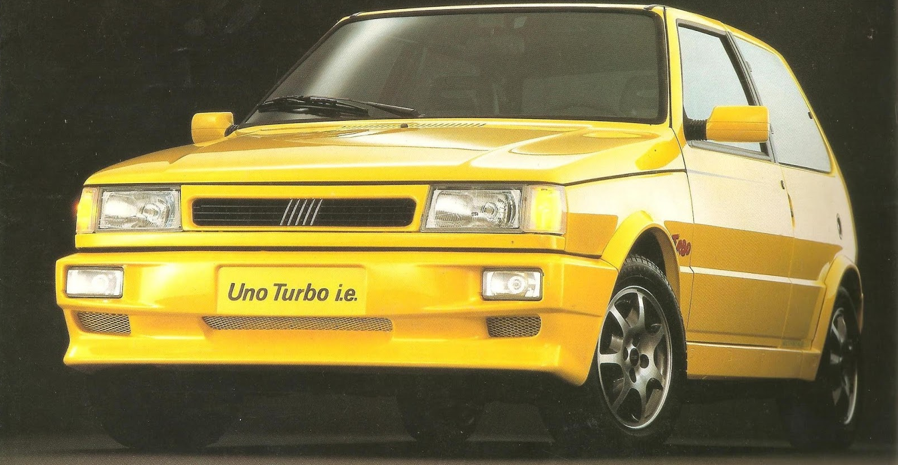

ESPORTIVO
Ficha Técnica
Ano
1994 - 1996
Motor
1.4 | 8V Turbo
Potência
118 cv
Câmbio
Manual | 5 marchas
Tração
Dianteira
Carroceria
Hatch
Combustível
Gasolina
FIPE
R$ 25.690 ~ R$ 34.167
Um pequeno foguete italiano
O Fiat Uno Turbo foi um dos grandes pioneiros dos esportivos turbo no Brasil. Com motor 1.4 turbo, baixo peso e desempenho surpreendente, entregava muita diversão ao volante e marcou uma geração de apaixonados por carros nos anos 90.